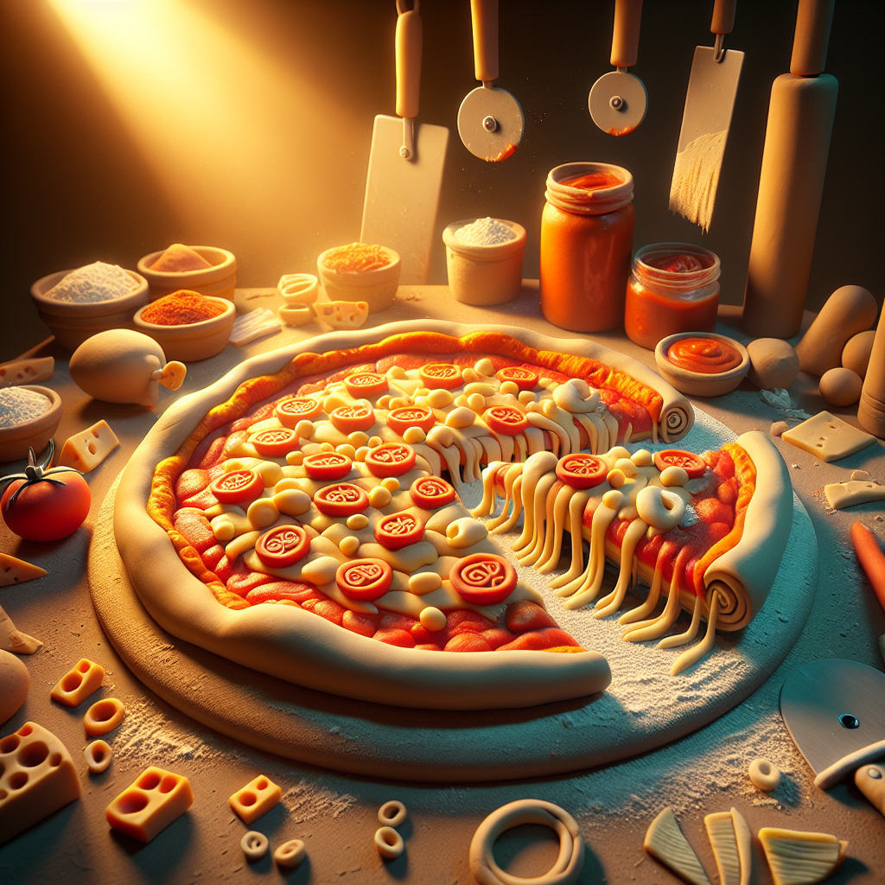

Why Pizza is Friggin Awesome!
Pizza is one of the most delicious and versatile snacks out there. Whether you like it plain, with your favorite toppings, or even topped with unusual ingredients, there's something for everyone. Plus, it's easy to make and can be a great way to get creative with your cooking. From its delicious flavor to its endless possibilities, pizza is definitely one of the tastiest treats around.
There's nothing quite like a hot slice of pizza, with its melted cheese and savory toppings. It's comforting, satisfying, and totally delicious. Not only does it taste great, but it's also incredibly versatile. You can top it with pepperoni, mushrooms, onions, peppers, olives, and more. Plus, you can also make vegan, vegetarian, or gluten-free pies.
Pizza is also a great way to get creative in the kitchen. You can experiment with unique flavor combinations, like feta and artichoke, or even create one-of-a-kind pies with unusual ingredients.
Of course, there's more to pizza than just its delicious flavor and endless possibilities. It's also a great way to bond with friends and family. Whether you're enjoying a slice around the dinner table or gathering around the kitchen to create your own pies, pizza is the perfect way to share some quality time.
So why is pizza so awesome? Because it's delicious, versatile, and can bring people together. Whether you like it plain, topped with your favorite ingredients, or even with something unusual, there's something for everyone. Plus, it's easy to make and can be a great way to get creative with your cooking. So why not grab a slice and enjoy one of the tastiest treats around?